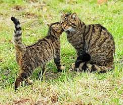
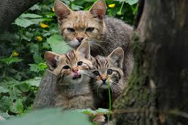

Дикая кошка – это мелкий, по сравнению, например, с рысью, представитель кошачьих, но она намного крупнее
домашней
кошки. У лесной кошки густая и мягкая шерсть, длиннее чем у ее одомашненной родственницы, а также короткий хвост, не
сужающийся на кончике. ... Длина хвоста 25 – 35см.
Лесные кошки очень пугливы и стараются не приближаться к поселениям людей. Они ведут скрытный и одиночный
образ
жизни и удерживают территорию от 1 км2 (в Шотландии, Франции) до 6 — 10 км2 — в пустынях Южной Африки
Охотится на мелких грызунов и других животных подобного размера, реже — на птиц. Она поселяется там, где нет недостатка в мышевидных грызунах, реже охотится на зайцев, кроликов и птиц, гнездящихся на земле. Лишь в очень редких случаях ей удаётся поймать детёныша оленя или косули и то при условии, что звери были ослаблены и не могли скрыться. Обычно охотятся поодиночке.
 